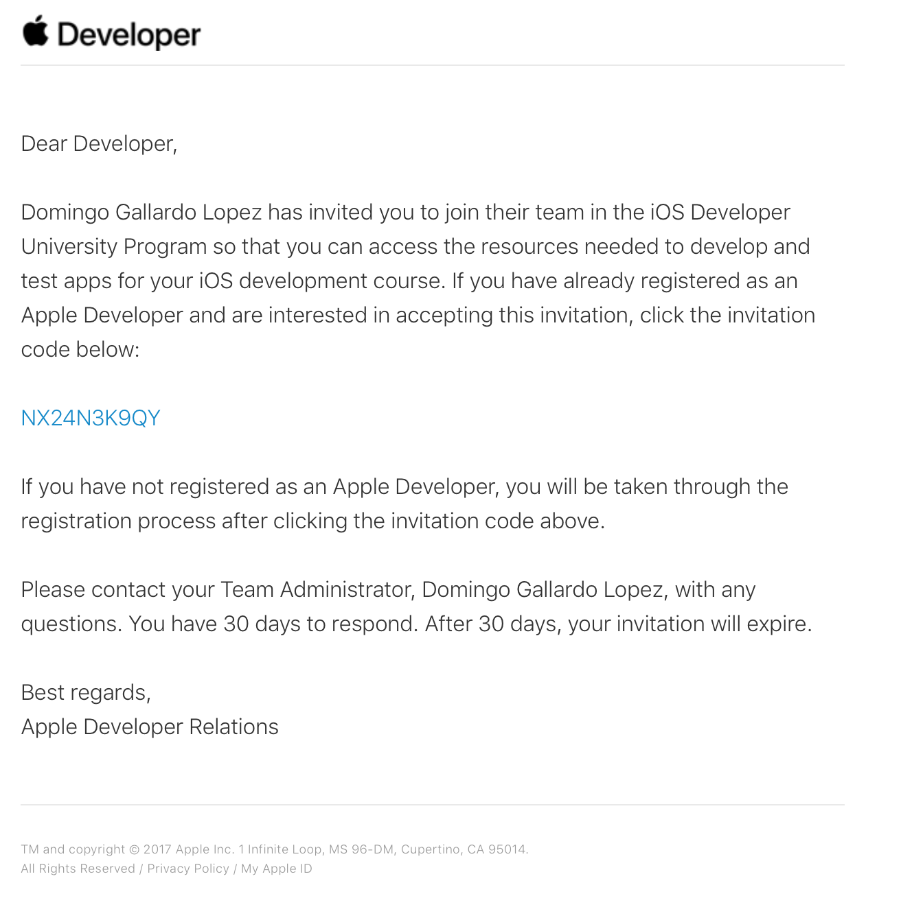

Práctica 1: Firma, aprovisionamiento y
distribución de apps¶
En las prácticas de esta sesión deberás trabajar con distintos aspectos relacionados con la firma, la distribución y el despliegue de apps en dispositivos reales.
Resumimos a continuación los objetivos generales de esta práctica:
- Firmar una app con tu cuenta gratuita e instalarla en un dispositivo configurado como dispositivo de desarrollo.
- Darte de alta en el equipo de desarrollo de la UA.
- Firmar y exportar la app usando un perfil de aprovisionamiento que te permite instalarla en cualquier dispositivo autorizado en el perfil.
- Configurar en la aplicación una capacidad y seleccionar un perfil del equipo de desarrollo de la UA que permita esta capacidad.
1. Antes de empezar la clase presencial¶
-
Antes de la clase presencial deberás mirar los tres vídeos con demostraciones que podrás encontrar en Moodle, en la sesión 1.
-
Una vez vistas estas demostraciones, debes leer los siguientes apartados del tema de teoría:
- Introducción: Resumen de lo que vamos a ver en este tema e introducción breve a la importancia de la seguridad en la plataforma de Apple.
- Cuenta de desarrollador de Apple: Explicación de los distintos tipo de programas de desarrollo en la plataforma Apple y características de cada uno.
- Certificado de firma de apps: Explicación del funcionamiento del certificado de desarrollador para la firma de apps. Una app sólo puede instalarse en un dispositivo si ha sido previamente firmada con un certificado de un desarrollador registrado.
- Capacidades de las aps: Para usar las capacidades proporcionadas por la plataforma de desarrollo Apple es necesario configurar una autorización usando un App ID.
- Despliegue de apps: para desplegar una app en un dispositivo de prueba es necesario instalar en ella un perfil de aprovisionamiento que contenga los permisos para acceder a las capacidades y los dispositivos autorizados en los que la app puede instalarse.
2. Firma e instalación de una app en un dispositivo de desarrollo¶
-
Deberás crear un Apple ID y darte de alta como desarrollador. Si ya lo tienes, no hace falta que hagas nada.
Para crear un Apple ID, puedes introducir tus datos en este enlace. Este Apple ID será el que se asociará a la cuenta de desarrollador.
Después deberás darte de alta como desarrollador Apple con el Apple ID recién creado en https://developer.apple.com.
-
Accede a tu portal de desarrollador. Será el portal del programa gratuito. Este programa permite acceder a las herramientas de desarrollo, la documentación y acceso limitado a ciertas capacidades (incluido probar aplicaciones en dispositivos conectados a Xcode).
Explora las distintas opciones que permite la cuenta:
- Documentation
- Downloads
- Forums
- Bug reporter
- Help
-
Descarga la app ToDo (versión storyboards) o ToDo (versión SwiftUI). Y sigue los pasos de la demostración para crear el certificado gratuito de desarrollador, cambiar el bundle ID de la app a un identificador tuyo, firmar la app, comprobar el certificado y probar la app en tu dispositivo de desarrollo (si lo tienes).
-
Incluye tu nombre en la pantalla en la que aparece el número de tareas terminadas (a la que se accede pulsando en el botón Done).
-
Captura la pantalla de Xcode en la que se muestra el bundle ID y el equipo que realiza la firma. Captura también una instantánea con la app ejecutándose en el dispositivo mostrando la pantalla con tu nombre. Si no tienes dispositivo, hazlo con la ejecución del simulador.
-
Comprueba que aparece un error cuando intentas exportar la app. Captura la pantalla de Xcode.
3. Configuración de la cuenta de desarrollador¶
-
Para la inscripción en el equipo de desarrollo de la universidad escribe tu nombre, apellidos, dirección de e-mail en este fichero Google Docs. Escribe también el ID del dispositivo (o dispositivos) que desees incorporar al portal del equipo de la UA.
-
Una vez que te añadamos al equipo de la UA recibirás en el correo electrónico un mensaje con un código de invitación. Pincha en él e introduce allí tu Apple ID.

- Una vez aceptada la invitación entra en el portal del desarrollador, comprueba que ya estás en el programa de la UA y prueba las distintas opciones disponibles.
4. Firma y despliegue de app con perfil de aprovisionamiento¶
Sigue los pasos de la demo y ejercicio de teoría, realizando lo siguiente:
-
Cambia el bundle ID y firma la app con el perfil genérico. Captura la pantalla de Xcode en la que se muestre esto.
-
Comprueba que es posible exportar la app utilizando el perfil genérico. Captura la pantalla.
-
Comprueba que aparece un error cuando intentas añadir la capacidad
Game Centerusando el perfil genérico. Captura la pantalla. -
Comprueba en el portal del desarrollador de la UA que el profesor ha creado el App ID y el perfil de aprovisionamiento
Master Moviles ToDocon la autorización para configurar en la app la capacidadGame Center.
Captura las pantallas con las páginas del portal del desarrollador de la UA mostrándolos (incluye en las pantallas toda la ventana del navegador, para que aparezca tu usuario en la parte superior derecha).
-
Instala en la app el perfil
Master Moviles ToDoy añade la capacidadGame Center. Comprueba que Xcode no da ningún error y captura la pantalla. -
Exporta la app, creando un binario .ipa. Si tienes algún dispositivo iOS, instala el fichero .ipa obtenido usando Apple Configurator.. El UUID del dispositivo deberá estar incluido en el perfil de aprovisionamiento. Captura una pantalla de la aplicación
Apple Configuratorinstalando la app en el dispositivo. Comprueba que la app funciona correctamente.
5. Entrega¶
Crea una carpeta y guarda en ella lo siguiente:
- Todas las capturas de pantalla (un total de 9 imágenes).
- Binario .ipa exportado en el último paso.
- Carpeta con el proyecto completo.
Comprime la carpeta y entrégala en la actividad de Moodle Entrega 1.